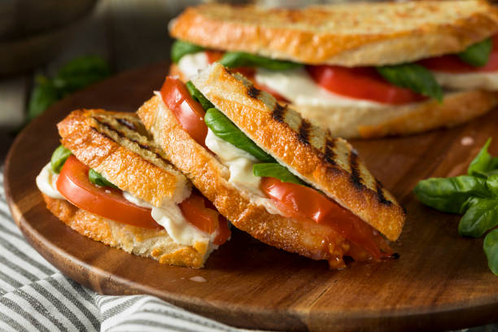

Pan Caprese

Con esta receta aprenderás a preparar el exquisito pan tipo Caprese, el que te servirá para cualquier ocasión: desayunos, brunches y onces
Ingredientes
- pan, de preferencia ciabatta
- salsa pesto
- tomates cherry
- queso mantecoso laminado
- aceite de oliva
- sal a gusto
Preparación
- cortar los tomates cherry por la mitad, echarlos en una fuente con aceite de oliva y sal y calentar en el horno hasta asarlos
- mientras se preparan los tomates, en el pan abierto, esparcir la salsa de pesto
- poner una lámina de queso sobre el pesto
- una vez asados los tomates, repartirlos sobre el queso asegurándose que queden distribuidos de forma pareja
- con el pan aún abierto, dejar dentro del horno hasta que el queso se derrita
- ya derretido el queso a gusto, puedes sacar el pan, taparlo y disfrutar
Inicio